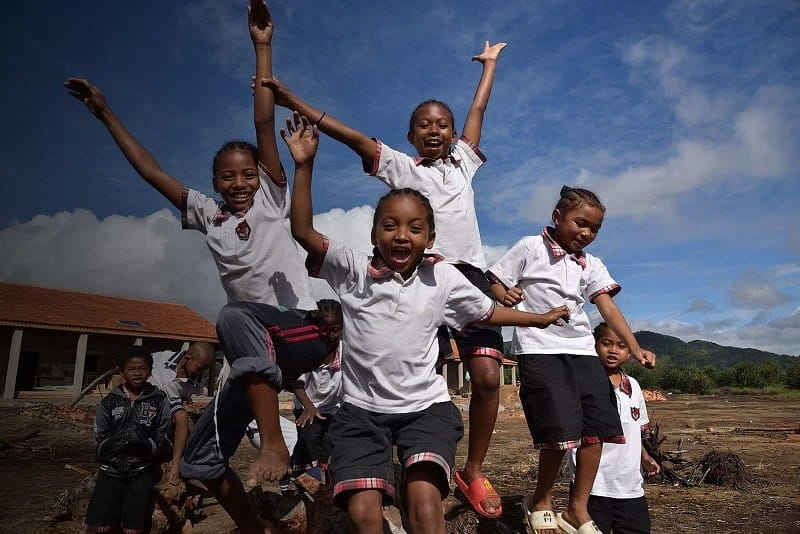
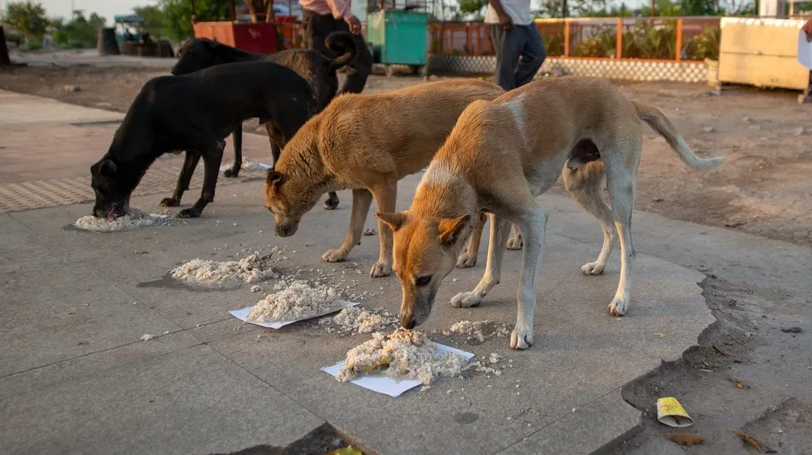
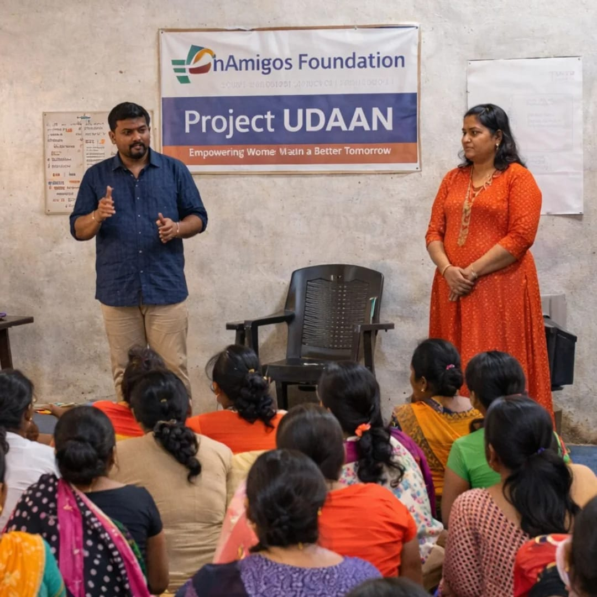
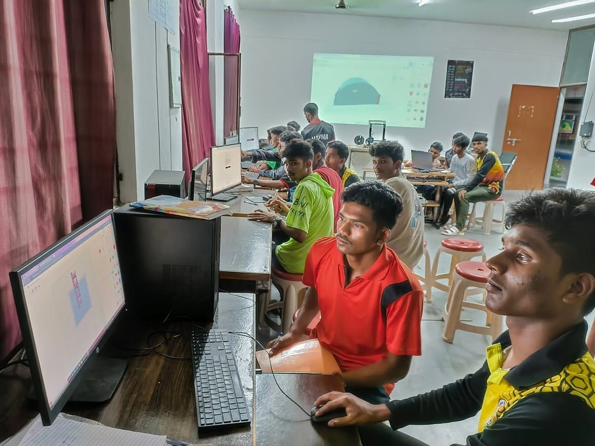
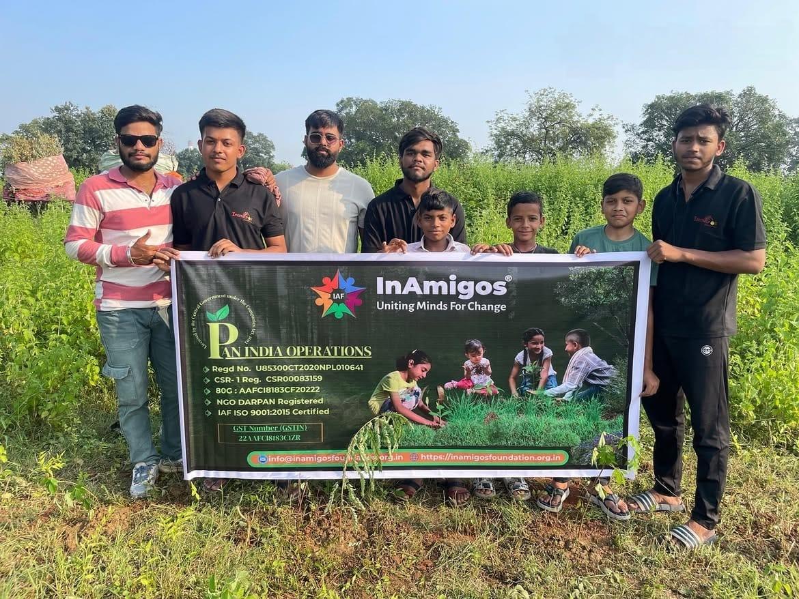

Project SEVA
images/seva.jpg
Project SEVA
Over 50,000+ meals and clothing distributed to underprivileged individuals and families, addressing hunger and basic living needs across regions.

InAmigos Foundation, founded on September 23, 2020, by Mr. Govind Shukla (Founder & CEO), is a Section 8 registered non-profit organization committed to creating lasting social impact across India.
InAmigos Foundation, founded on September 23, 2020, by Mr. Govind Shukla (Founder & CEO), is a Section 8 registered non-profit organization committed to creating lasting social impact.
Headquartered in Chhattisgarh and operating nationwide, we address critical societal issues through a dedicated network of professionals, youth interns, and volunteers.
To deliver actionable support, resources, and sustainable development programs across hunger relief, child education, women empowerment, animal welfare, environmental conservation, and youth skill building.
A more inclusive, compassionate, and empowered society built on collective action, quality standards, and transparent, measurable social change in every community across India.
Explore our six major initiatives tackling hunger relief, education, animal care, women's independence, environment, and youth employability.
Over 50,000+ meals and clothing distributed to underprivileged individuals and families, addressing hunger and basic living needs across regions.

Bridging educational gaps by training underprivileged children in basic digital literacy, essential life skills, and academic school support.

Dedicated to animal welfare, rescue, and protection, feeding over 50+ stray animals daily through our active volunteer network.

Empowering rural women through self-help groups, skill training, financial independence initiatives, and menstrual hygiene awareness drives.

Advocating sustainability by planting 20,000+ saplings, conducting conservation campaigns, and promoting eco-friendly agriculture practices.

Enhancing youth employability by training 30,000+ interns in fields including finance, data operations, marketing, content, research, and social work.
Through transparent operations and dedicated nationwide support, here is what we have achieved together.
Direct food security and clothing relief via Project SEVA.
Skill development and career mentorship via Project VIKAS.
Environmental conservation drives via Project PRAKRITI.
Animal care and daily feeding network via Project JEEV.
Browse through field photographs captured during our meal distribution drives, learning centers, tree plantations, and health camps.


